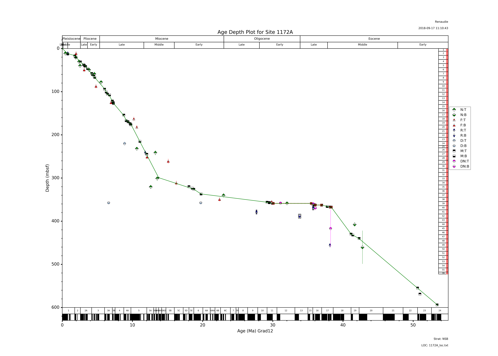

A few thoughts on stratigraphy
2020-10-28
This summer Dave and I wrote a pre-proposal for a pilote project (whose goal was to create a data standard for stratigraphy) in the context of the NFDI4Earth, a german-wide initiative to create a common infrastructure for geosciences-related research data. My preproposal was not selected, which, given its nichebroader than it seems but maybe it wasn't made clear in my proposal subject, was more or less expected.
It was nonetheless a very good occasion to put in writings some thoughts I had about stratigraphy as a science, and I kept pondering about it since then. I do think there are a significant number of issues in stratigraphy that prevent it from going forward.
The first issue, that I wanted to address with that proposal, is the issue of reproducibility. Instead of re-explaining it, here's the main point I made in a preliminary version of the proposal:
Current exchange standards reflect the fact that chronostratigraphic information in many databases is reduced to a single text or numerical age tag for an object. However this value is not raw data but interpreted data, which depends on how the age was inferred; what biostratigraphic, magnetostratigraphic or isotopic data were used, how these data were calibrated and to which standard timescale (e.g. a geomagnetic polarity time scale - GPTS) the calibrations were made. As calibrations and standard scales evolve with time, those static age assignments attached to samples are frequently out of date and incorrect. The relevant chronostratigraphic data needed to correct these ages, despite often being in existence, is typically stored in another system and is not linked to the sample records. The absence of linked chronostratigraphic metadata accompanying these age assignments, or a standard for creating the linkage, is a major hinderance to correct data synthesis.
The second issue is that of error quantification. It's a fairly complex issue that I am not sure to be able to verbalize correctly here but to make it simple: age models (in deep-sea stratigraphy at least) are made based on biostratigraphic, magnetostratigraphic, isotopic data; all those data come with a margin of error, first in depth as the cores are sampled discretely, and more importantly in time; that error, in the current state of affair, is not propagated to the age model. It should be, but we simply do not have the mathematical framework to do so correctly (as far as I can judge) currently. More generally, statistics in stratigraphy is widely underdeveloped as a discipline but is necessary for the field to go forward. I dream of seeing one day an IODP site being dated with an age model with a confidence interval!
Another, more minor issue, that may be unique to deep-sea stratigraphy, is the assumption of linearity in the sedimentation rate, i. e. what makes age models a series of connected segments rather than a smooth curve (see for instance my age-model making software NSB_ADP_wx as main culprit). There are plenty of evidence for a dynamically changing sedimentation rate. Of course implementing that to routinely create non-broken age models is frankly very complex, but it is most probably the way to go forward.
Unfortunately, apart from the first issue mentioned, for which I had a solution (creating a metadata standard), the other issues are more open-ended, and I, unfortunately, do not have a solution so far. But I am working on it!
Quite a textbook scenario for everything I mentioned here!